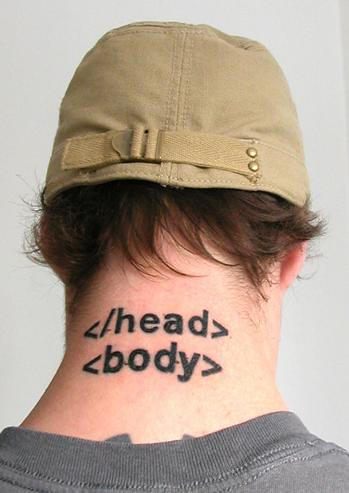
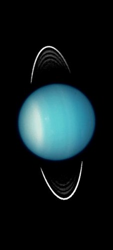
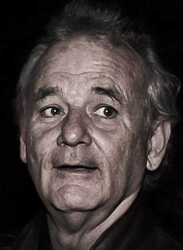
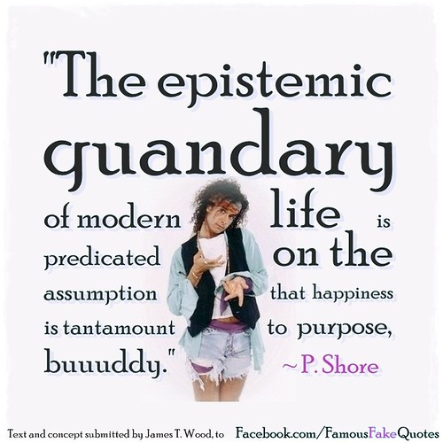

Projects I've Done Semantic Elements  Cats, Cats, Catsssss Pho: The Greatest Soup Known to Man Cosplay: Why?
Projects I'll Do Uranus  Lost in Translation: Bill Murray's Triumph  What Happened to Pauly Shore? 